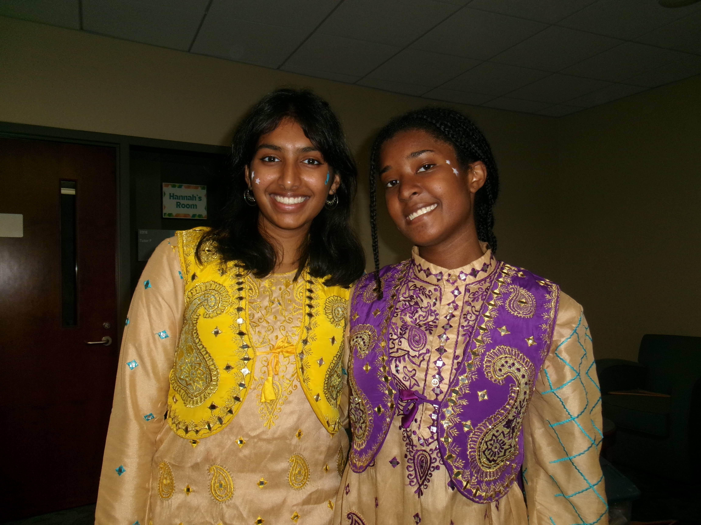

I’m currently a student at UNC Chapel Hill, graduating in May 2028. I’m pursuing a double major in Biology and Computer Science because of my interest in cardiology and desire to develop interdisciplinary solutions that utilize technology to address cardiovascular issues.
Last year, under the guidance of Dr. John Vavalle in UNC’s Heart Valve Clinic, I extracted data from EPIC and used Excel to determine if there was a relationship between prosthetic valve size and blood leak after transcatheter aortic valve replacement (TAVR) for 215 patients post-procedure. During my time in the clinic, I shadowed approximately fifteen procedures, ranging from TAVRs and catheterizations to ablations in the electrophysiology lab. I watched the catheter traverse through the lifelike heart map on the computer screen, mirroring what was happening inside the operation room. I grasped the vitality of computer models and imaging for proper navigation during procedures. I am eager to create similar computer models of human physiology that can be used to optimize clinical outcomes.

My passion for medicine heightened after witnessing my close friend’s mother pass away from a heart attack last year–an event that gave a new meaning to the research I was conducting. Despite witnessing multiple procedures that reduce the risk for myocardial infarctions, I recognized that these interventions sometimes arrive after a patient's underlying risk factors have caused harm. This realization, combined with my interest in biology, inspired me to analyze the body’s internal mechanisms to better understand and mitigate patient risk.
Currently, I am a member of the Cardiovascular Modeling and Simulation Lab and Bautch Lab, where I support research that uses biological and computational approaches to both map blood flow and analyze its impact on cell behavior, respectively. Moreover, by conducting detailed chart reviews for 10 patients a week as a medical scribe in UNC’s Cardiology department, I noted the wide range of patients needing cardiovascular treatment and the diversity in their situations and anatomies. In the future, I plan to develop patient-specific models to refine pre-procedural planning and reduce patient’s risk for thrombosis and cardiovascular disease.

This summer, I will continue conducting research in both labs and intend to begin investigating the relationship between valve size and calcification through literature reviews. Consequently, through these literature reviews, I will establish an understanding of valve dynamics which will be fundamental to discover whether valve fluttering affects calcium build-up. In addition, I will be taking Discrete Mathematics (MATH 381), Introduction to Programming and Data Science (COMP 110), and Biological Research Skills (BIOL 105L) at UNC.
Outside of the classroom, I enjoy drawing and dancing. I am a member of UNC Bhangra Elite and have performed bhangra at UNC halftime shows, Holi Moli, and Sutra - our team’s yearly showcase. Additionally, I have danced Bharatanatyam for over 13 years and completed my solo graduation (arangetram) in the summer of 2021.